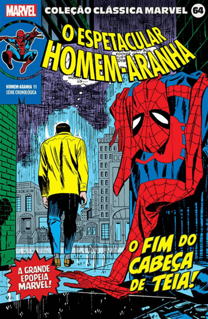

Mais Vendidos
da Semana
Mangás
Livros
Comics
Livros Da Semana
É assim que começa
Lily Bloom continua administrando uma floricultura. Seu ex-marido abusivo, Ryle Kincaid, ainda é um cirurgião. Mas agora os dois estão oficialmente divorciados e dividem a guarda da filha, Emerson. Quando Lily esbarra em Atlas ― com quem não fala há quase dois anos ―, parece que finalmente chegou o momento de retomar o relacionamento da adolescência.
R$:30,54
Comprar
O dia em que perdi a minha voz
Após dois anos sem publicar textos inéditos, Kaio Bruno Dias, autor de obras aclamadas no universo jovem e jovem adulto, nos apresenta o seu novo livro “O dia em que perdi a minha voz”. Predominantemente estruturado em prosas poéticas que se intercalam com as ilustrações feitas pela artista visual japonesa Mirin Takano, neste novo livro.
R$:36,90
Comprar
Relato de um gato viajante
O gato Nana está viajando pelo Japão. Ele não sabe muito bem para onde está indo ou por que, mas ele está sentado no banco da van prata de Satoru, seu dono. Lado a lado, eles cruzam o país para visitar velhos amigos. O fazendeiro durão que acredita que gatos só servem para caçar ratos, o simpático casal dono de uma pousada que aceita animais.
R$:37,50
Comprar
Coraline
Certas portas não devem ser abertas. E Coraline descobre isso pouco tempo depois de chegar com os pais à sua nova casa, um apartamento em um casarão antigo ocupado por vizinhos excêntricos e envolto por uma névoa insistente, um mundo de estranhezas e magia.
R$:32,49
Comprar
Noiva
Misery Lark, filha do vampiro mais poderoso do sudoeste, nunca foi bem-vista pelos seres de sua espécie. Ela passa seus dias anonimamente em meio aos humanos, isolada, até que é chamada para firmar um acordo de paz entre vampiros e licanos, seus inimigos mortais. Para isso, será obrigada a se casar com Lowe Moreland.
R$:27,30
Comprar
Scott Pilgrim
Scott Pilgrim está feliz com sua preciosa vidinha. Aos vinte e poucos anos, esse canadense levemente excêntrico divide os dias entre o ócio do desemprego voluntário e os ensaios de sua banda de rock, a improvável Sex Bob-Omb.
R$:19,99
Comprar
Mangás da Semana
Jujutsu Kaisen Vol. 22
Um espírito amaldiçoado misterioso surge repentinamente na Colônia de Sakurajima, alguém relacionado a Maki que se transformou em uma maldição após a morte!! A feiticeira e Noritoshi são encurralados pelo espírito amaldiçoado que evoluiu de feto a adulto em uma velocidade surpreendente.
R$:25,83
Comprar
My Hero Academia Vol. 25
A terrível origem de Shigaraki é finalmente revelada. Junto dela, o líder da Liga dos Vilôes recupera a sua memória e isso terá sérias consequências em seus objetivos. Enquanto isso, Hawks realiza uma difícil missão ao mesmo tempo que os alunos da U.A.
R$:17,80
Comprar
Tokyo Ghoul Vol. 2
Além de ter que aceitar sua nova condição como um meio Ghoul, Kaneki precisa aprender com os membros da Anteiku a se comportar como um deles para continuar vivendo entre os humanos. Porém, os recentes eventos ocorridos no Distrito 20 atraem investigadores ao local, e eles não demonstram ter tempo.
R$:28,80
Comprar
Demon Slayer Vol. 12
Após a intensa batalha contra Gyuutarou e Kokushibo, Tanjiro precisa lidar com as consequências, incluindo a quebra de sua espada. Ele embarca em uma jornada para encontrar um novo ferreiro e consertar sua arma. Enquanto isso, a tensão aumenta entre os Doze Kizuki.
R$:26,18
Comprar
Hanako-Kun, Vol. 1
Um boato sobre os sete mistérios se espalha pelo Colégio Kamome. Dizem que, na terceira cabine do banheiro feminino do terceiro andar do prédio velho, é possível encontrar "Hanako-san", ue realizará qualquer pedido de quem for ao seu encontro.
R$:34,00
Comprar
Nanatsu no Taizai Vol. 5
Os Sete Pecados Capitais chegam à cidade de Byzel e participam de um festival de luta. Durante o torneio, eles descobrem uma relíquia sagrada e enfrentam novos desafios. As antigas amizades são testadas e os pecados revelam mais sobre seus passados.
R$:34,50
Comprar
Comics da Semana
Star Wars (2017) Vol. 8
Luke finalmente tem a oportunidade de ficar um tempo a sós com Leia. Infelizmente, isso acontece depois que a dupla se perde em uma ilha deserta! Sana e Lando unem forças em Coruscant para faturar alguns créditos! Han e Chewie voltam ao trabalho como contrabandistas...
R$:31,70
Comprar
Mulher-Gato: Ano Um
Selina Kyle foi encontrada espancada em um beco sujo de um bairro sujo em Gotham City. Antes de se envolver nas tramas de um certo Homem-Morcego, ela toma seu destino em suas próprias mãos, com as ferramentas e recursos que puder reunir. É hora do troco.
R$:24,90
Comprar

Coleção Clássica Marvel Vol. 64
Neste décimo primeiro volume da coleção clássica da marvel dedicado ao Homem-Aranha, o Escalador de Paredes enfrenta o perigoso Shocker! Então, o Duende Verde oferece uma recompensa pela cabeça do Aranha e Kraven, o Caçador, quer eliminar de uma vez por todas nosso herói aracnídeo.
R$:34,90
Comprar
Arlequina: Beijinho Beijinho Tiro e Facada
A melhor amiga da Arlequina está em perigo e nada vai ficar entre a Piradinha e a sua tão querida Hera Venenosa! E mais, quando a vida é atribulada demais para se conciliar o combate ao crime, o trabalho no hospital, as responsabilidades de senhoria e o Clube do Patim, uma solução um tanto quanto não ortodoxa pode ser a única alternativa possível.
R$:32,70
Comprar
A Saga do Superman Vol. 22
A CORRIDA DO SÉCULO! Superman ou Flash: afinal, quem é o verdadeiro homem mais rápido do mundo? Mxyzptlk prepara o cenário para a corrida suprema entre os dois super-heróis! Como se não fosse emoção o bastante, Draaga está de volta! Ele chega a Metrópolis vindo do espaço apenas para encontrar o Superman, depois de ter sido derrotado pelo kryptoniano. O que será que ele pretende?
R$:32,19
Comprar
Demolidor Por Mark Waid Vol. 06
Tudo parece estar contra o Demolidor em suas inúmeras tentativas de colocar sua vida nos eixos, e, desta vez, não vai ser diferente! Fantasmas do passado retornam para assombrar o demônio da Cozinha do Inferno, e não é apenas com isso que ele vai precisar lidar: representar no tribunal o único garoto que o Homem Sem Medo teme.
R$:75,80
Comprar